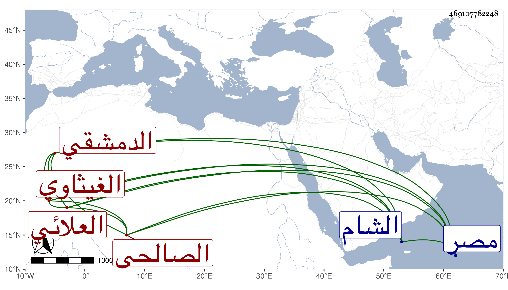

0902Sakhawi.DawLamic.ITO20230111-ara1.EIS1600.469107782248
Biography ID: 469107782248
96
علي بن محمد العلائي الصالحي الدمشقي الغيثاوي نسبة لغيثا بالقرب من الزبداني قيم الموالة . كتب عنه البدري في مجموعه قوله :
| حبيت كوسى ينور بالملاحة دعد | حلو المحيا فحم قلبي بفاحم جعد |
| خلتو ووجهو وفي بدور حميو يا سعد | قمر لعب بقضيب البرق فوق الرعد |
وكان راغبا في نقل التصانيف الغريبة إلى مصر من الشام وعكسه وبيده بعض جهات مات سنة خمس وسبعين تقريبا ، يحرر أهو من ترجمة هذا .
